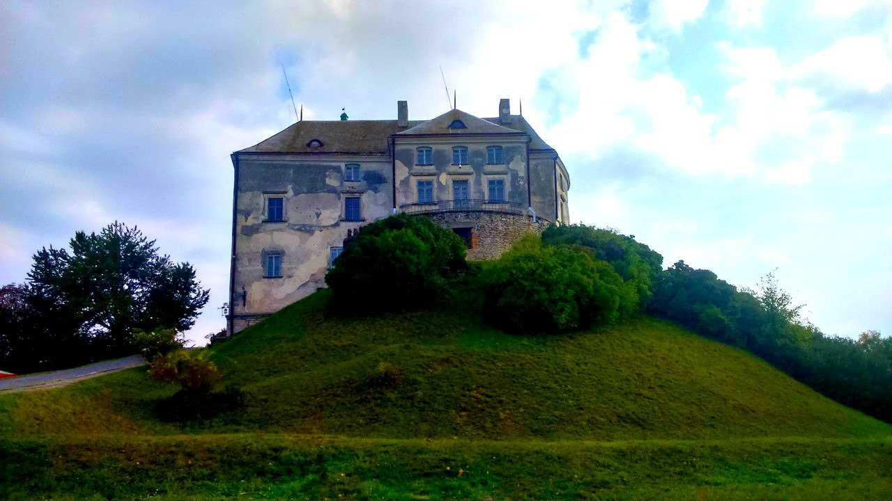
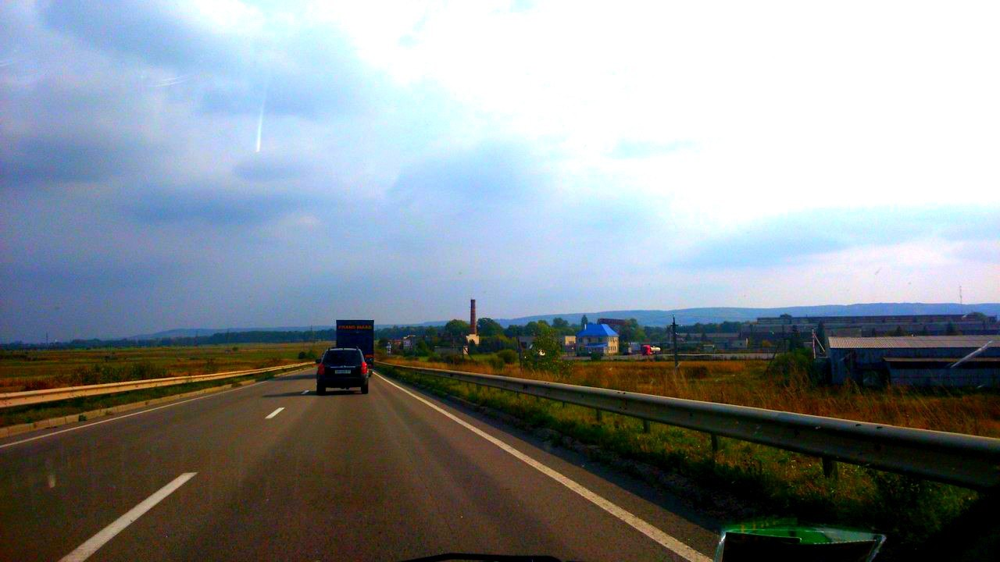
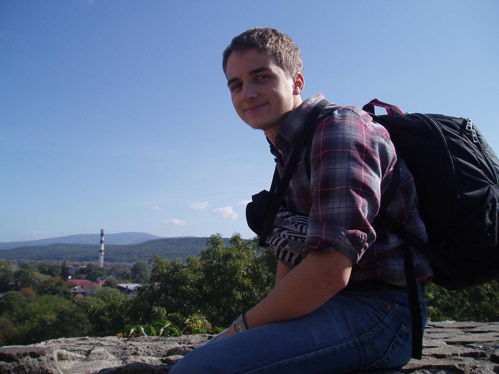
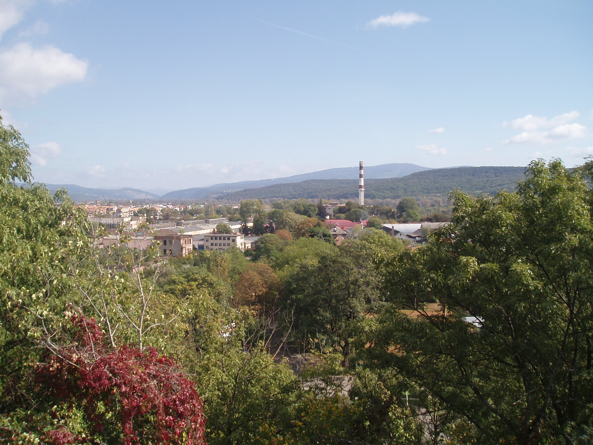

Олеськ
Пари, модулі, здачі лаб і курсові — коли буденність затягує, беріть
з собою ліпших друзів і влаштовуйте спонтанні незаплановані
міні-подорожі куди очі поведуть.
Дорога під колесами, гарна компанія, мальовнича природа і небачені
досі місця зроблять свою добру справу і гарантовано піднімуть
настрій. Вчора таким місцем став один з найдавніших в Україні
Олеський замок, що знаходиться за 75 кілометрів від Львова. |
 |
 |
УжгородМісто з запахом м'яса.
Місто де багато вина.
Сира і м'яса.
Місто з особливим колоритом закарпаття.
Місто з неймовірними краєвидами.
"Люди - прекрасні..."
Люди - прекрасні.
Земля - мов казка.
Кращого сонця ніде нема.
Загруз я по серце
У землю в'язко.
Вона мене цупко трима.
І хочеться
Бути дужим,
І хочеться так любить,
Щоб навіть каміння байдуже
Захотіло ожити
І жить!
Воскресайте, камінні душі,
Розчиняйте серця і чоло,
Щоб не сказали
Про вас грядущі:
- Їх на землі не було...
Василь Симоненко
|
 |
 |